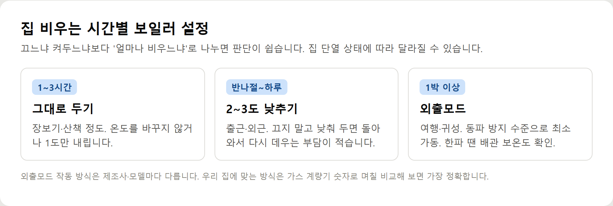

<meta charset="utf-8">
<title>아파트·원룸·단독주택별 겨울 난방비 절약 방법 — 나의 투자 그리고 행복한 여행</title>
<meta name="description" content="겨울 난방비 절약 방법을 아파트·원룸·단독주택·오래된 집별로 정리. 외출모드 쓰는 시점, 흔한 오해 4가지, 2026 에너지바우처 금액까지.">
<meta name="viewport" content="width=device-width, initial-scale=1">
<link rel="canonical" href="https://worldtraveler1.tistory.com/116">
<link rel="preconnect" href="https://fonts.googleapis.com">
<link rel="preconnect" href="https://fonts.gstatic.com" crossorigin>
<link rel="stylesheet" href="https://fonts.googleapis.com/css2?family=Hahmlet:wght@400;600;800&family=IBM+Plex+Mono:wght@400;500&family=IBM+Plex+Sans+KR:wght@300;400;500;600&display=swap">

<style>
  :root{
    --paper:#F2EEE6;--surface:#FAF8F3;--surface-2:#E7E1D5;
    --ink:#191510;--ink-2:#4A4235;--ink-3:#7D7364;
    --line:#D6CEBF;--line-soft:#E4DDD0;--accent:#B06A15;--accent-bright:#C2761A;
    --up:#E5484D;--down:#3B82F6;
    --f-display:"Hahmlet",'Nanum Myeongjo',"Apple SD Gothic Neo",serif;
    --f-body:"IBM Plex Sans KR","Apple SD Gothic Neo","Malgun Gothic",sans-serif;
    --f-mono:"IBM Plex Mono","SFMono-Regular",Consolas,monospace;
    --pad:clamp(20px,5vw,64px);
  }
  @media (prefers-color-scheme:dark){
    :root:not([data-theme="light"]){
      --paper:#0B1120;--surface:#121A2C;--surface-2:#1A2439;
      --ink:#E9EEF7;--ink-2:#A9B5C9;--ink-3:#72809A;
      --line:#26314A;--line-soft:#1D2739;--accent:#E8A33D;--accent-bright:#F0B45C;
    }
  }
  *{box-sizing:border-box;}
  body{margin:0;background:var(--paper);color:var(--ink);font-family:var(--f-body);
    font-weight:300;font-size:1rem;line-height:1.75;-webkit-font-smoothing:antialiased;}
  a{color:inherit;}
  img{max-width:100%;height:auto;}
  .wrap{max-width:760px;margin:0 auto;padding-inline:var(--pad);}
  .nav{position:sticky;top:0;z-index:20;background:color-mix(in srgb,var(--paper) 88%,transparent);
    backdrop-filter:saturate(180%) blur(12px);border-bottom:1px solid var(--line);}
  .nav-in{display:flex;align-items:center;justify-content:space-between;height:58px;}
  .brand{font-family:var(--f-display);font-weight:600;font-size:1rem;letter-spacing:-.02em;text-decoration:none;}
  .back{font-family:var(--f-mono);font-size:.72rem;color:var(--ink-3);text-decoration:none;}
  .article{padding-block:clamp(40px,7vw,72px) clamp(56px,9vw,96px);}
  .eyebrow{font-family:var(--f-mono);font-size:.68rem;letter-spacing:.16em;text-transform:uppercase;
    color:var(--accent);margin:0 0 14px;}
  h1{font-family:var(--f-display);font-weight:800;font-size:clamp(1.6rem,4.4vw,2.3rem);
    line-height:1.3;letter-spacing:-.03em;margin:0 0 16px;}
  .byline{font-family:var(--f-mono);font-size:.72rem;color:var(--ink-3);
    padding-bottom:24px;border-bottom:1px solid var(--line);margin-bottom:32px;}
  h2{font-family:var(--f-display);font-weight:600;font-size:1.25rem;letter-spacing:-.02em;margin:42px 0 14px;}
  h3{font-family:var(--f-display);font-weight:600;font-size:1.05rem;letter-spacing:-.02em;
    margin:30px 0 10px;padding-top:14px;border-top:1px solid var(--line-soft);}
  h3 .code{font-family:var(--f-mono);font-size:.7rem;font-weight:400;color:var(--ink-3);margin-left:6px;}
  p{margin:0 0 18px;color:var(--ink-2);}
  ul.checks{margin:0 0 18px;padding-left:20px;color:var(--ink-2);}
  ul.checks li{margin-bottom:8px;font-size:.94rem;}
  table{width:100%;border-collapse:collapse;font-size:.88rem;margin-bottom:8px;}
  th{font-family:var(--f-mono);font-size:.66rem;letter-spacing:.06em;text-transform:uppercase;
    color:var(--ink-3);text-align:right;padding:8px 6px;border-bottom:1px solid var(--line);}
  th:first-child{text-align:left;}
  td{padding:10px 6px;border-bottom:1px solid var(--line-soft);color:var(--ink-2);}
  td.num{font-family:var(--f-mono);text-align:right;font-variant-numeric:tabular-nums;}
  td.up{color:var(--up);} td.down{color:var(--down);}
  .scroll{overflow-x:auto;}
  figure{margin:22px 0;}
  figure img{display:block;border-radius:3px;background:var(--surface-2);}
  figcaption{margin-top:8px;font-family:var(--f-mono);font-size:.68rem;color:var(--ink-3);text-align:center;}
  .note{margin-top:34px;padding:16px 18px;border-left:3px solid var(--accent);
    background:var(--surface);border-radius:0 3px 3px 0;}
  .note p{margin:0;font-size:.85rem;color:var(--ink-3);}
  .foot{border-top:1px solid var(--line);background:var(--surface);padding-block:30px 38px;}
  .foot p{margin:0;font-size:.8rem;color:var(--ink-3);}
</style>

<nav class="nav">
  <div class="wrap nav-in">
    <a class="brand" href="../index.html">나의 투자 그리고 행복한 여행</a>
    <a class="back" href="../index.html#stocks">← 시황으로</a>
  </div>
</nav>

<main class="wrap article">
  <p class="eyebrow">Market</p>
  <h1>아파트·원룸·단독주택별 겨울 난방비 절약 방법</h1>
  <p class="byline">생활 · 2026-09-25 기준</p>

  <p><b>이 포스팅은 쿠팡 파트너스 활동의 일환으로, 이에 따른 일정액의 수수료를 제공받습니다.</b></p>
  <p><b>이 포스팅은 네이버 쇼핑 커넥트 활동의 일환으로, 판매 발생 시 수수료를 제공받습니다.</b></p>
  <p>한 줄 요약: 집 구조에 따라 식는 속도가 달라서, 같은 방법도 효과가 다릅니다. 우리 집 유형에 맞는 것부터 하세요.</p>
  <p>구체적인 절감액은 지역·난방 방식·사용량에 따라 크게 달라서 숫자로 적지 않았습니다.</p>
  <h2>아파트</h2>
  <p>위아래 집 열 덕분에 식는 속도가 느린 편입니다. 온도를 크게 오르내리게 하지 말고 일정하게 두는 방식이 잘 맞습니다. 중앙·지역난방이라면 세대에서 조절할 수 있는 범위(밸브, 온도조절기)를 먼저 확인하세요.</p>
  <h2>단독주택</h2>
  <p>지붕·벽·바닥으로 빠지는 열이 많습니다. 안 쓰는 방은 밸브를 줄이고 문을 닫아서 생활하는 공간만 데우세요. 외부로 드러난 배관은 겨울 전에 보온재 상태를 봐 두는 게 좋습니다.</p>
  <h2>원룸</h2>
  <p>공간이 작아서 빨리 데워지고 빨리 식습니다. 창 하나, 현관 하나만 막아도 체감이 크게 달라집니다. 문풍지와 커튼부터 해 보세요.</p>
  <div style="text-align:center;margin:30px 0"><a href="https://link.coupang.com/a/hkMiqCtc9k" target="_blank" rel="nofollow sponsored noopener" style="display:inline-block;padding:15px 28px;background:#E34948;color:#fff;font-weight:700;font-size:18px;text-decoration:none;border-radius:8px"><b>▶ 쿠팡에서 보기 — 아텍스 실리콘 외풍차단 문풍지 테이프 45mm x 5m</b></a></div>
  <h2>오래된 주택</h2>
  <p>외풍과 동파가 가장 큰 문제입니다. 샷시 틈, 외부 배관, 보일러 상태를 먼저 점검하세요. 보일러 교체 지원은 해마다·지역마다 조건이 달라서 거주지 지자체 공고로 확인해야 합니다.</p>
  <h2>집을 오래 비울 때</h2>
  <figure><figcaption>집을 비우는 시간에 따라 보일러를 어떻게 둘지 정리한 표</figcaption></figure>
  <p>1박 이상이면 외출모드를 켜 두세요. 전원을 완전히 끄면 한파에 배관이 얼 수 있습니다. 반나절 외출이라면 외출모드보다 2~3도 낮추는 쪽이 낫습니다.</p>
  <h2>하루 종일 집에 있을 때</h2>
  <p>온도를 일정하게 유지하는 게 핵심입니다. 낮엔 커튼을 걷어 햇볕을 받고, 해 지기 전에 닫으세요. 실내에서 얇은 겉옷을 하나 입으면 설정을 1도 낮춰도 크게 춥지 않습니다.</p>
  <div style="text-align:center;margin:30px 0"><a href="https://naver.me/52a1bBk5" target="_blank" rel="nofollow sponsored noopener" style="display:inline-block;padding:15px 28px;background:#E34948;color:#fff;font-weight:700;font-size:18px;text-decoration:none;border-radius:8px"><b>▶ 네이버에서 보기 — 방풍 단열 방한커튼 (현관·중문용)</b></a></div>
  <h2>아이나 어르신이 있는 집</h2>
  <p>여기선 절약보다 건강이 먼저입니다. 설정 온도를 억지로 낮추지 말고, 틈 막기·커튼·습도 관리로 새는 열을 줄이는 쪽으로 가세요. 전기장판은 저온으로, 접히지 않게 쓰고 오래된 제품은 점검하세요.</p>
  <h2>흔한 오해 네 가지</h2>
  <ul class="checks">
    <li>자주 껐다 켜면 절약된다 → 짧은 외출이라면 재가동에 더 쓸 수 있다</li>
    <li>외출할 땐 무조건 외출모드 → 동파 방지 위주 기능이라 반나절엔 너무 식는다</li>
    <li>온도는 크게 낮출수록 좋다 → 결로·곰팡이, 전열기 추가 사용으로 이어진다</li>
    <li>온수 온도를 높이면 빨리 데워진다 → 목표 온도만 올라가 더 오래 돈다</li>
  </ul>
  <p>결국 어느 집이든 새는 열을 먼저 막고, 온도는 조금씩 조절하는 게 기본입니다.</p>
  <h2>모든 집에 공통</h2>
  <ul class="checks">
    <li>설정 온도는 1~2도씩만 조절</li>
    <li>짧은 외출엔 끄지 말고 낮추기</li>
    <li>습도 40~60% 유지</li>
    <li>고지서 사용량을 작년 같은 달과 비교</li>
  </ul>
  <div style="text-align:center;margin:30px 0"><a href="https://worldtraveler1.tistory.com/116" target="_blank" rel="nofollow sponsored noopener" style="display:inline-block;padding:15px 28px;background:#E34948;color:#fff;font-weight:700;font-size:18px;text-decoration:none;border-radius:8px"><b>▶ 원문에서 전체 내용 보기 — 겨울 난방비 절약 방법</b></a></div>
  <h2>참고자료</h2>
  <ul class="checks">
    <li>에너지바우처 누리집 — 2026년 지원 대상·금액·사용 기간 (energyv.or.kr)</li>
    <li>도시가스 절약 캐시백 누리집 — 사업 기간·참여 대상·절감률별 단가 (k-gascashback.or.kr)</li>
    <li>아시아경제, 경북 도시가스 공급비용 조정·주택용 동결 (2026.7.13)</li>
  </ul>
  <div class="note"><p>난방비가 얼마나 줄어드는지는 집 구조, 지역, 난방 방식(개별·중앙·지역난방), 가족 수와 생활 패턴에 따라 크게 달라서 이 글에서는 절감액을 숫자로 적지 않았습니다. 에너지바우처 금액과 기간은 2026년 9월 25일 공식 누리집 기준이며, 도시가스 요금과 캐시백 사업은 지역·연도마다 바뀌니 신청 전에 공식 공지를 확인하세요.</p></div>
  <p style="font-size:12px;color:#999;line-height:1.6;margin-top:36px">이 포스팅은 쿠팡 파트너스 활동의 일환으로, 이에 따른 일정액의 수수료를 제공받습니다.</p>
  <p style="font-size:12px;color:#999;line-height:1.6;margin-top:36px">이 포스팅은 네이버 쇼핑 커넥트 활동의 일환으로, 판매 발생 시 수수료를 제공받습니다.</p>
</main>

<footer class="foot">
  <div class="wrap"><p>나의 투자 그리고 행복한 여행 · 투자 판단의 참고 자료일 뿐, 매수·매도를 권유하지 않습니다.</p></div>
</footer>
